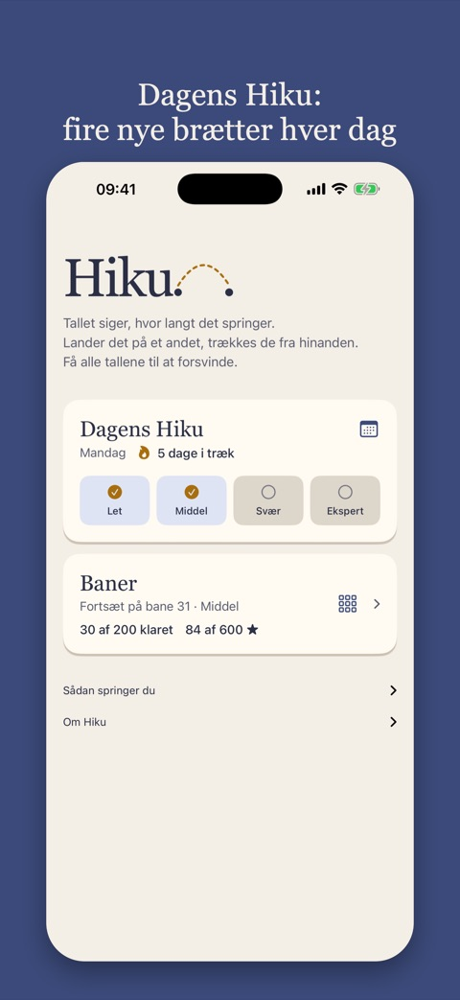
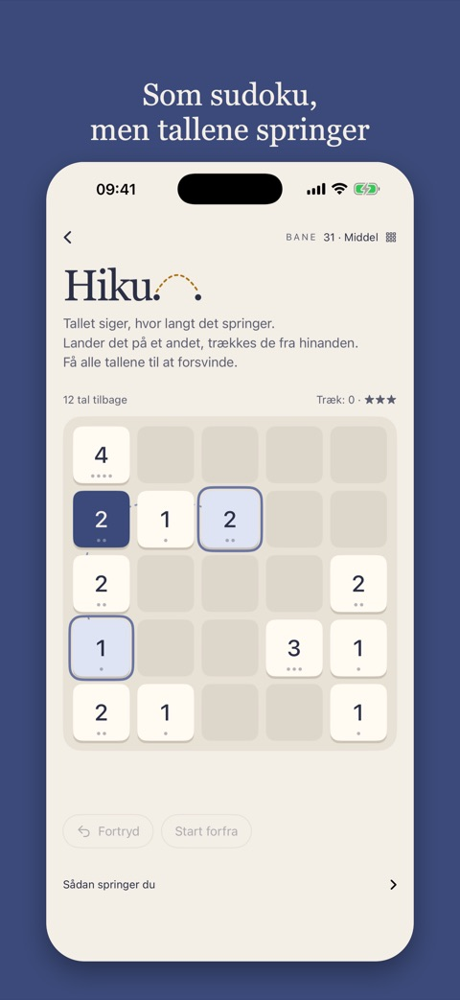
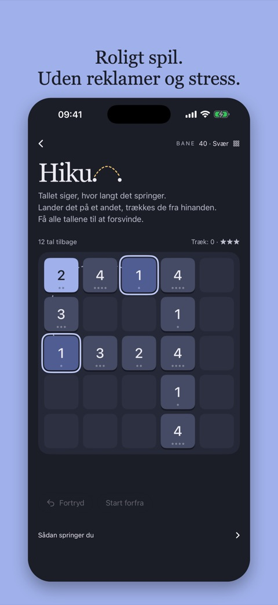

Hiku er et roligt talspil for dig, der kan lide sudoku: ren logik, intet gætteri.
Tallet siger, hvor langt det springer. Lander det på et andet, trækkes de fra hinanden. Få alle tallene til at forsvinde.
Fire nye brætter hver dag, fra let til ekspert. Nye ved midnat.
Kan du lide sudoku? Hiku er ren logik med én regel: tallet siger, hvor langt det springer. Fire nye brætter hver dag, fra let til ekspert.
I appen er der 50 baner ud over Dagens Hiku, og de første lærer dig tricksene ét ad gangen.



Et tal springer lige så mange felter, som det siger, vandret eller lodret. Et 1-tal når naboen, et 3-tal når tre felter væk. Det springer over alt imellem, men skal lande på et andet tal.
Det mindste trækkes fra det største, og resten bliver, hvor du landede. Ens tal forsvinder begge to. Når et tal bliver mindre, bliver springet kortere.
Alle baner kan løses. Den forkerte rækkefølge kan efterlade tal, der ikke kan nå hinanden. Fortryd frit og prøv en anden vej.
Løser du banen uden at fortryde, får du tre stjerner. Med en eller to fortrydelser får du to, ellers én. At starte forfra tæller som én fortrydelse.
Dagens Hiku kan indlejres gratis på et netmedie eller website med to linjer kode. Ingen cookies, ingen sporing, og spillet findes på seks sprog.
Hvorfor kan nogle brætter ikke løses, og hvor langt frem skal du se på et ekspertbræt? Artiklen viser, at summens paritet aldrig ændrer sig, at brættet deler sig i grupper, der aldrig mødes igen, og at tallene i hver gruppe skal kunne deles i to bunker med samme sum. Om spillet er NP-komplet, er stadig et åbent spørgsmål.
Hiku indsamler ingen personoplysninger. Appen har ingen konto og ingen reklamer, og den sporer dig ikke på tværs af apps eller websites.
Hvilke baner du har løst, dine stjerner og Dagens Hiku gemmes kun på din egen telefon. Widgetten læser de samme tal der. Alt slettes, hvis du sletter appen.
Fra version 1.2 sender appen nogle få anonyme milepæle, så vi kan se, hvor langt spillerne når: når du har løst 1, 9, 10, 20, 30, 40 eller 50 baner (og 100, 150 og 200), når du løser et bræt i Dagens Hiku og på hvilket niveau, og når din stime med Dagens Hiku når 3, 7, 14, 30 dage eller mere. Milepælene sendes til TelemetryDeck, en europæisk analysetjeneste bygget til privatliv. De indeholder intet navn, ingen e-mail, ingen placering eller andet, der kan kobles til dig; installationen får et tilfældigt nummer, der laves om til en envejskode, før det sendes. Vi bruger kun tallene til at gøre spillet bedre.
Dagens Hiku i browseren sætter ingen cookies og sender ingen spildata. Dine resultater gemmes kun i din browser. Websitet tæller besøg med Cloudflare Web Analytics, som ikke bruger cookies og ikke følger dig mellem websites: vi ser, hvor mange der kom og fra hvilket website, ikke hvem.
Har du spørgsmål, har du fundet en fejl, eller sidder du fast på et bræt? Skriv til es@rubberduck.no.